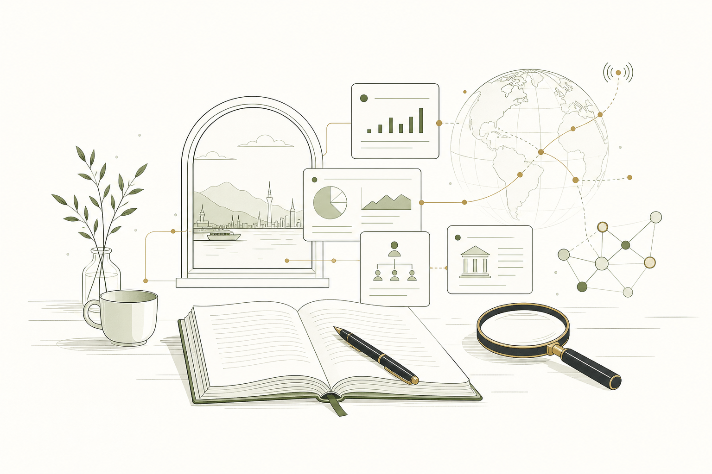
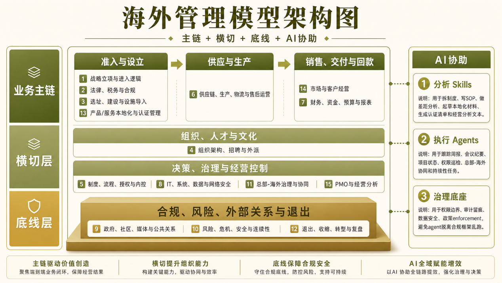
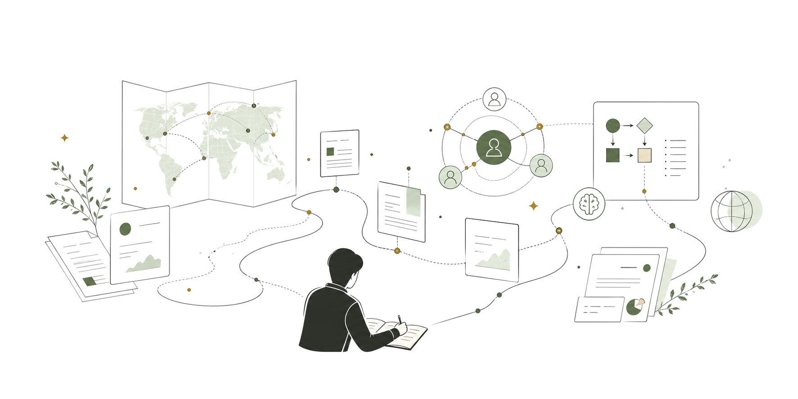

马来语信息处理 / 跨文化语境基础
马来语新闻编译、翻译与跨文化信息理解，为后续海外项目协作打下语言和区域基础。
About

我的核心经历来自制造业海外项目管理：参与和主导从 0 到 1 的海外项目推进，负责可行性分析、资源规划、风险预案、成本控制、跨部门协同和 SOP 建设。 这段经历让我熟悉项目从前期判断、执行推进到复盘沉淀的完整链条，也让我理解复杂项目中最关键的不是单点执行，而是把信息、责任、节点和风险拆清楚。
MBA 阶段补充了商业分析、流程分析和组织管理训练；近阶段的出海业务探索与 AI 工具化实践，则让我进一步明确自己的求职方向： 更适合项目管理 PMO、流程优化、经营分析支持和 AI 工具化落地类岗位。出海、跨文化和东南亚背景，是我在海外项目和跨部门协作场景中的加分项。
Timeline
马来语新闻编译、翻译与跨文化信息理解，为后续海外项目协作打下语言和区域基础。
推进海外重点项目，覆盖可行性分析、资源规划、风险预案、成本控制、跨部门协同、SOP 建设和海外项目转移。
通过品牌调研、汽车后市场服务体系评估和跨文化冲突管理研究，补充经营判断、流程分析和组织管理框架。
接触东南亚猎头咨询、非洲外贸项目、美国跨境电商运营和 AI 工具化支持，进一步验证 PMO、流程优化和结构化判断方向。
围绕 Agent、Skills、知识管理、招聘匹配、SOP 分析和内容工作流，探索 AI 如何辅助信息结构化与管理支持。
Thinking Model
当项目涉及海外市场、跨文化团队、总部制度落地和 AI 工具化时，我的复合背景更容易发挥作用。
我看待项目管理和流程优化时，会先把问题拆成四层：业务目标是什么、关键流程在哪里、跨部门协作如何发生、哪些信息可以被结构化和工具化。 这套方法既可以用于普通 PMO / 流程支持，也可以延展到出海业务、海外项目和跨文化协作场景。
对我来说，AI 的现实价值不是替代业务判断，而是参与信息整理、流程拆解、风险清单、SOP 改写、会议纪要、项目复盘和知识沉淀。 它可以成为管理支持中的协作层，帮助团队降低重复沟通和信息损耗。
目标、范围、节点、资源、风险和交付闭环。
SOP、责任边界、协同机制、复盘与知识沉淀。
信息结构化、可行性分析、资源/成本/风险对比。
AI Skills、知识库、结构化分析和工作流自动化。

Capabilities
项目拆解和闭环、风险识别、跨部门推进、跨文化协同、属地化运营适配与海外项目支持。
SOP 梳理、流程优化、责任边界拆解、项目复盘、知识沉淀和组织协同机制分析。
信息结构化、可行性分析、资源 / 成本 / 风险对比、供应商与方案比较、管理报告输出。
AI Agent / Skill、知识管理、结构化分析、提示词工作流、信息抽取和低风险场景自动化。
东南亚 / 马来语背景、海外项目经验、属地化沟通理解、总部制度与当地执行之间的适配判断。
AI Cases
3 个重点案例 + 1 个补充案例，展示 AI 如何进入流程分析、需求澄清、知识沉淀、招聘匹配和跨文化 SOP 支持场景。
用于预检中国总部 SOP、KPI、政策和管理规则在东南亚落地时可能出现的文化摩擦。 它会把文本拆成条款，识别执行阻力、沟通误差、信任风险和文化冲突，再输出红黄绿风险判断、双语改写和管理者落地提醒。
把模糊想法逐步澄清为需求、MVP、规格文档或 Skill 设计。它强调先问清楚问题，再进入方案和实现。
需求澄清 · MVP 收敛 · Spec Gate沉淀个人中文写作风格，用于公众号文章、个人表达、AI 味降低、结构优化和文章拆分。
风格迁移 · 文章改写 · 个人表达系统一个面向海外招聘场景的简历筛选 Web App，围绕 JD 对候选人材料做匹配、差距识别和输出沉淀。
JD 匹配 · 简历筛选 · 海外招聘Portfolio
这里展示更宽泛的项目经历，用来支撑 PMO、流程优化、经营分析支持和 AI 工具化实践能力。
参与并主导 3 个从 0 到 1 的海外重点项目，覆盖可行性分析、资源规划、风险预案、成本控制和跨部门推进。
梳理海外项目关键阶段、责任部门、风险点和输出物，把分散经验沉淀为后续项目可复用的流程资产。
梳理股权结构、合作关系、业务形态、产品逻辑与运营模式，识别控制权、资源掌控和区域扩展风险。
在预算受限、周期紧和信息不完整时，整合多渠道供应商报价，评估价格、物流周期和合规风险。
设计并执行访谈与市场调研方案，收集一线用户反馈与竞争情报，输出品牌复兴策略报告。
参与 8 家著名车企售后流程与行业标准拆解，进行流程评估、竞品对比和分析报告输出。
搭建 AI 新闻表格、Obsidian AI 知识库、内容工作流和票据录入机器人，验证低风险场景下的信息整理与流程提效。
Writing
我把公众号作为长期观察和复盘的地方，记录 AI 工具实践、Agent / Skills 搭建、个人工作流、出海组织与跨文化管理观察，以及流程、组织和工具如何影响人的协作效率。

Contact
如果你正在寻找项目管理 PMO、流程优化、经营分析支持或 AI 工具化相关角色，也欢迎就海外项目、跨文化协作和出海业务支持场景联系我。